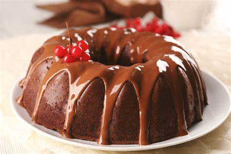

Pudim de Chocolate
"Experimente o pudim mais cremoso e irresistível que você já provou, com uma receita simples que derrete na boca e encanta em cada colherada!"
Tempo de Preparo
- Aproximadamente 40 minutos
- Rende 20 porções
Ingredientes
- 1 lata de leite condensado
- 400 ml de leite (use a lata de leite condensado para medir)
- 3 ovos
- 4 colheres de sopa de chocolate em pó
- 1 xícara de chá de açúcar
- 1/2 xícara de chá de Água
- Em uma panela, derreta o açúcar até obter um caramelo
- Acrescente a água e deixe cozinhar até que se forme uma calda grossa
- Espalhe a calda por todo o interior de uma forma própria para pudins e reserve
- Bata no liquidificador o leite condensado, o chocolate, o leite e os ovos
- Despeje lentamente o conteúdo do liquidificador na forma com caramelo reservada
- Leve para assar em banho maria no forno pré-aquecido a 180ºc por cerca de 40 minutos
- Deixe esfriar, desenforme e leve à geladeira até a hora de servir